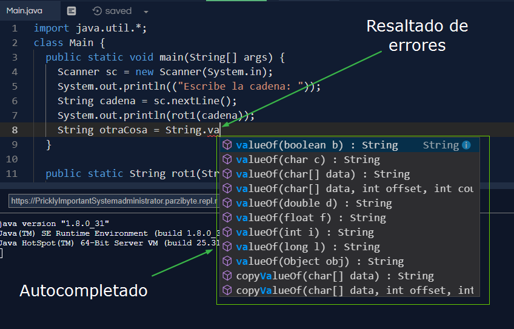

Java es un lenguaje de programación y una plataforma informática que fue comercializada por primera vez en 1995 por Sun Microsystems
El lenguaje de programación Java fue desarrollado originalmente por James Gosling, de Sun Microsystems (constituida en 1983 y posteriormente adquirida el 27 de enero de 2010 por la compañía Oracle), y publicado en 1995 como un componente fundamental de la plataforma Java de Sun Microsystems. Su sintaxis deriva en gran medida de C y C++, pero tiene menos utilidades de bajo nivel que cualquiera de ellos. Las aplicaciones de Java son compiladas a bytecode (clase Java), que puede ejecutarse en cualquier máquina virtual Java (JVM) sin importar la arquitectura de la computadora subyacente.
La compañía Sun desarrolló la implementación de referencia original para los compiladores de Java, máquinas virtuales y librerías de clases en 1991, y las publicó por primera vez en 1995. A partir de mayo de 2007, en cumplimiento de las especificaciones del Proceso de la Comunidad Java, Sun volvió a licenciar la mayoría de sus tecnologías de Java bajo la Licencia Pública General de GNU. Otros han desarrollado también implementaciones alternas a estas tecnologías de Sun, tales como el Compilador de Java de GNU y el GNU Classpath.
Algunas de sus características son:
Es versátil y se puede usar en diferentes dispositivos y sistemas operativos, como teléfonos inteligentes, televisores inteligentes, y equipos.
Es rápido, seguro y confiable.
Es una plataforma de desarrollo popular para aplicaciones empresariales.
Es un lenguaje de programación compilado, lo que significa que el código fuente se traduce a código binario antes de ser ejecutado.
|  |
 |
|  |
|